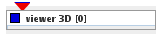
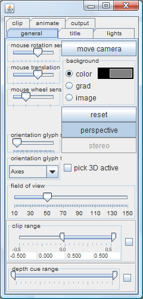
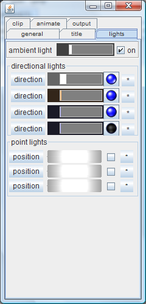
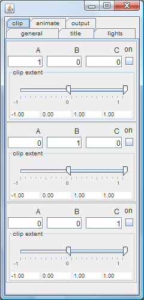
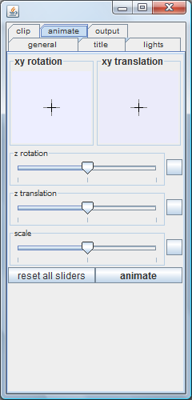
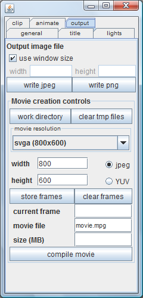

|
|
|

basic viewer for 3D objects
| input port | type | description | data acceptors |
|---|---|---|---|
| inObject | VNGeometryObject | ||
| output port | type | description | data schemas |
VIEWER 3D
User can interact withe a presented three dimensional scene, manipulate light settings, cut scene bounds, animate the scene or write output graphics as an image or compile a movie from image sequence (third-party software required - ffmpeg, see www.ffmpeg.org for details).
left mouse button click | if pick 3D active initiates 3d pick sequence else picks object |
left mouse button double click | reset 3D scene to standard position and scale |
middle mouse button (wheel) click | reset 3D world to standard position and scale |
right button button click | pops up viewer 3D controls at current mouse position |
left mouse drag | rotates currently selected object (scene, camera or directional light) |
middle mouse drag | translates currently selected object (scene, camera or point light) front <-> back |
right mouse drag | translates currently selected object (scene, camera or point light) in the screen plane |
mouse wheel | scales scene |
<cursor keys> <shift-cursor> <ctrl-cursor> | rotate scene in 1 deg increments rotate scene in 30 deg increments rotate scene in 90 deg increments |
<pg up/down> <shift-pg up/down> <ctrl-pg up/down> | rotate scene around z-axis in 1 deg increments rotate scene around z-axis in 30 deg increments rotate scene around z-axis in 90 deg increments |
<space> | pops up viewer 3D controls in the top left position on the screen |
<backspace> | reset 3D world to standard position and scale |
p | turns perspective off/on |
c | subsequent mouse dragging will move camera |
o | subsequent mouse dragging will move scene objects |
s | if stereo mode is available, toggles stereo on/off |
.(dot) | toggles on/off 3d picking feature |
when enabled:
selection glyph (light green diamond) is positioned at the picked point and the scene returns to the original position
VIEWER 3D CONTROLS WINDOW
 |
|
 |
|
 | This tab allows to clip a 3d scene in object space with up to three clipping planes. By default, planes YZ, XZ and XY are used. On the right, there is a button to turn this clipping plance on/off. Clip extent is controlled with a double slider below. |
 |
|
 |
|